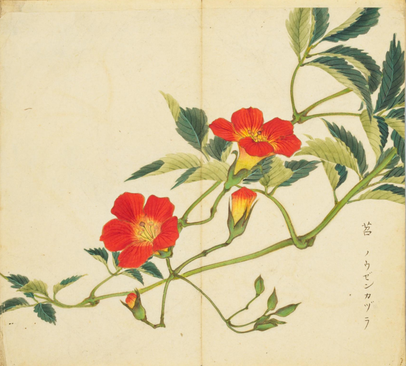
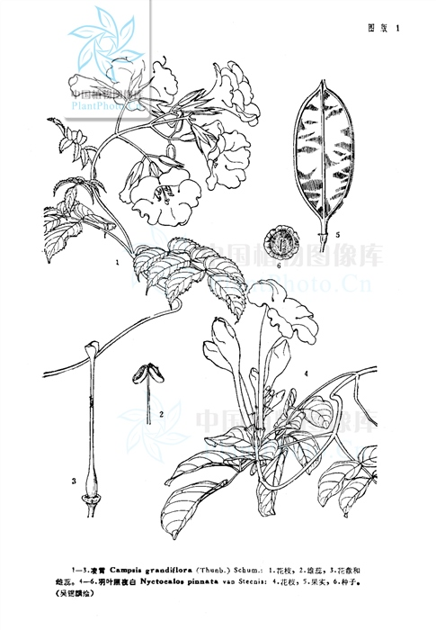

出现篇目
别名 这里是内容。
古代记载 《毛诗故训传》
苕，陵苕也。（《毛传》注《苕之华》）
《毛诗草木鸟兽虫鱼疏》
苕，一名陵时，一名鼠尾，似王刍，生下隰水中，七八月中华紫，似今紫草，华可染皂，煮以沐发即黑，叶青如蓝而多华。
《毛诗正义》
正义曰：《释草》云：“苕，陵苕。黄华蔈，白华茇。”舍人曰：“苕，陵苕也。黄华名蔈。白华名茇。别华色之名也。”某氏曰：“《本草》云‘陵莳，一名陵苕’。”陆机《疏》云：“一名鼠尾，生下湿水中，七八月中华紫，似今紫草。华可染皂，煮以沐发即黑。”如《释草》之文，则苕华本自有黄有白，传言将落则黄，是初不黄矣。笺云“陵苕之华，紫赤而繁”。陆机《疏》亦言其华紫色。盖就紫色之中，有黄紫、白紫耳。及其将落，则全变为黄。以《裳裳者华》言之，则芸为极黄之貌，故将落乃然。（《毛诗正义》疏《苕之华》）
《诗集传》
苕、陵苕也。本草云、卽今之紫葳。蔓生附於喬木之上。其華黃赤色。亦名凌霄。（《诗集传》集注《苕之华》）
当代记载 《中国植物志》
凌霄（Campsis grandiflora），紫葳科，凌霄属植物。攀援藤本；茎木质，表皮脱落，枯褐色，以气生根攀附于它物之上。叶对生。花冠内面鲜红色，外面橙黄色，长约5厘米。蒴果顶端钝。花期5-8月。
产长江流域各地，以及河北、山东、河南、福建、广东、广西、陕西，在台湾有栽培；日本也有分布，越南、印度、西巴基斯坦均有栽培。

<细井徇>

<中国植物志>